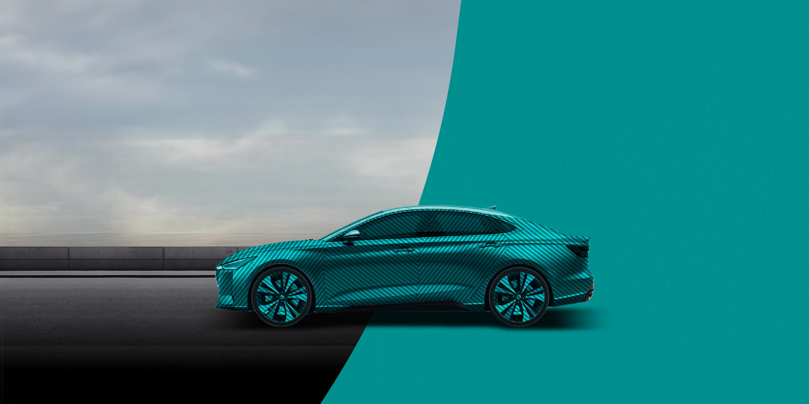
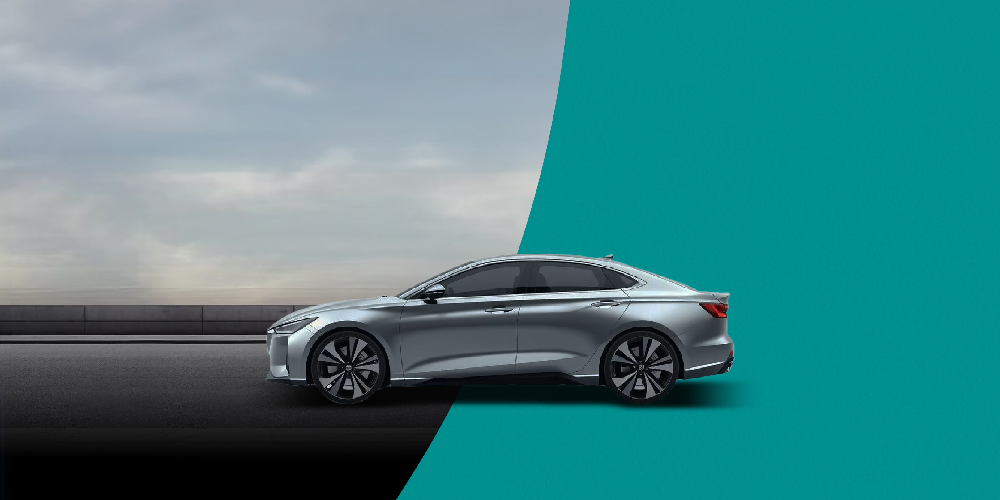
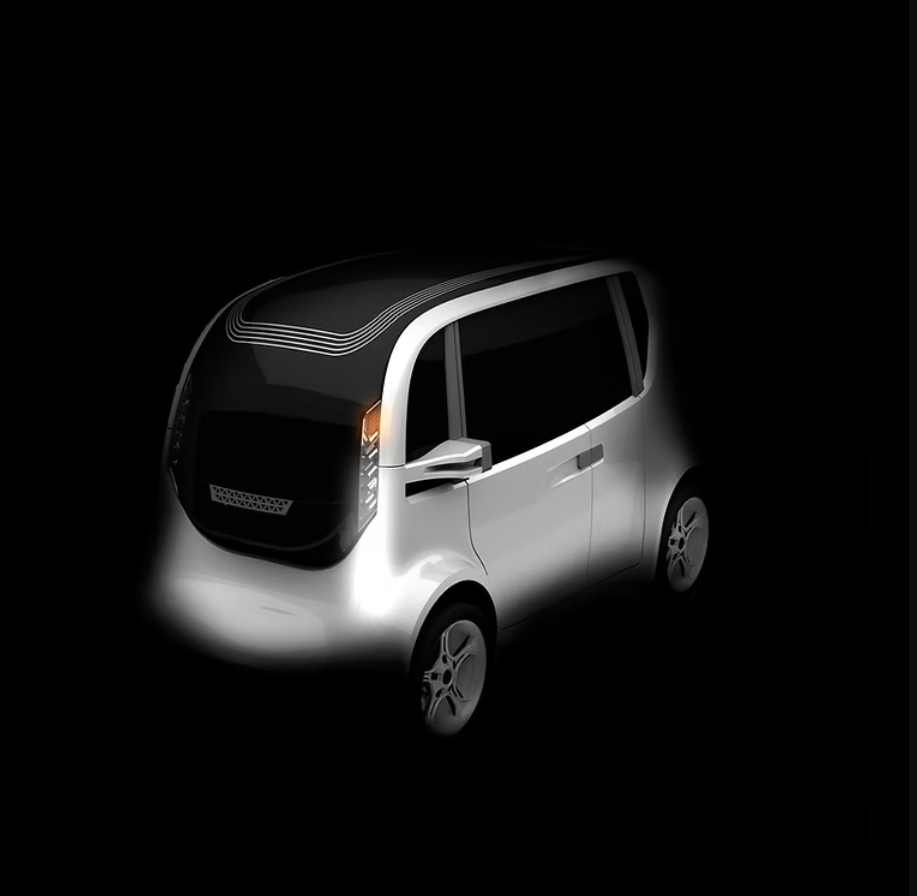
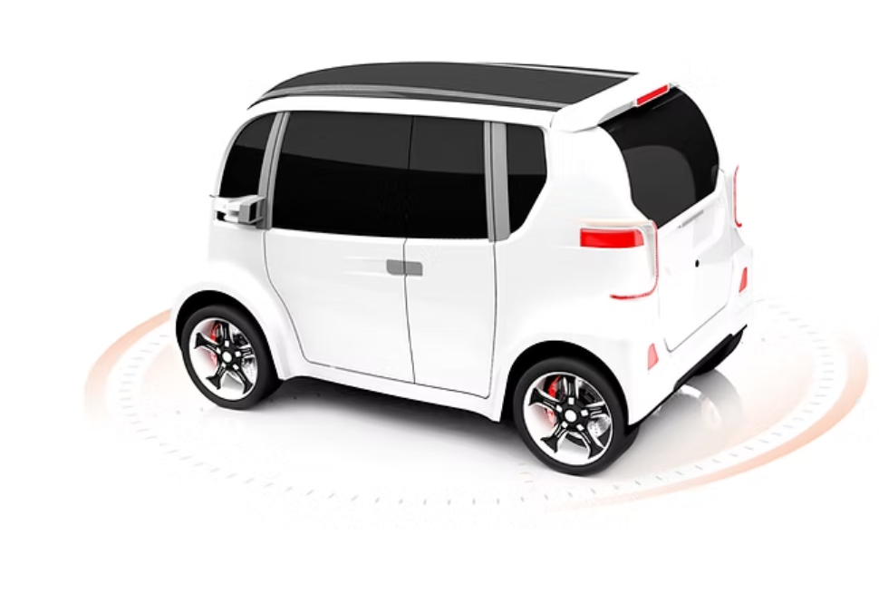
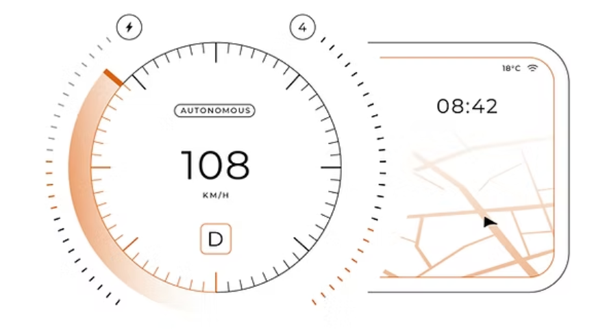
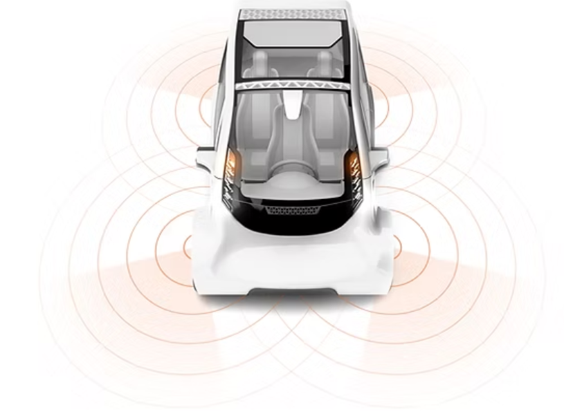

İLETİŞİM
- Telefon
- E-posta
- kazai.platform@gmail.com
- Adres
- İTÜ Arı Teknokent 3 İç
Kapı No:1101, 34485
Sarıyer / İstanbul
.png)


Yapay zekâ tabanlı kaza analizi ve hasar tespit sistemi
KazAI, kaza sonrası süreçlerin dijital dönüşümünde küresel ölçekte standart belirleyen ve güven, hız ile şeffaflığın simgesi olmayı hedefleyen bir yapay zekâ platformudur. Vizyonumuz, araç teknolojilerinin gelişimiyle birlikte sürücünün müdahalesine gerek kalmadan kazaların eksiksiz ve otomatik yönetildiği yeni bir döneme öncülük etmektir.

KazAI, kaza fotoğraflarını yapay zekâ tabanlı görüntü işleme teknolojisiyle analiz ederek aracın hasarlı bölgelerini yüksek doğrulukla tespit eder ve kusur oranını belirler. Böylece belirsizlikler ortadan kalkar, herkes için adil ve güvenilir bir süreç sağlanır.

Hasar analizi sonrası KazAI, anlaşmalı onarım merkezlerinden teklifleri toplar ve kullanıcıya sunar. Bu sayede maliyetler şeffaflaşır, sürücüler en uygun seçeneği tek platform üzerinden kolayca değerlendirebilir.

KazAI, kaza sonrası araçsız kalmayı ortadan kaldırır. En yakın çekici hizmetini yönlendirir ve kullanıcıya ihtiyacına uygun kiralık araç seçeneklerini anında sunar.

KazAI'nin sunduğu detaylı raporlar, sigorta şirketleri için karar alma sürecini hızlandırır. Kullanıcılar ödemelerin daha hızlı, şeffaf ve adil şekilde gerçekleşmesini deneyimler.
KazAI, trafik kazalarının ardından sürücüler, sigorta şirketleri ve onarım merkezleri için süreci uçtan uca dijitalleştiren bir platformdur. Yapay zekâ tabanlı görüntü işleme teknolojimiz, kaza fotoğraflarını analiz ederek hasarı, kusur oranını ve onarım maliyetini dakikalar içinde raporlar. Böylece kaza sonrasındaki karmaşık süreç, kullanıcılar için tek ekranda basit, hızlı ve güvenilir bir şekilde yönetilebilir hale gelir.
KazAI, kaza sonrası süreci baştan sona dijitalleştirerek sürücüler, sigorta şirketleri ve onarım merkezleri için daha hızlı, şeffaf ve adil bir ekosistem oluşturur. Yapay zeka tabanlı çözümlerimiz, trafik güvenliğinin artırılmasına, hasar süreçlerinin hızlanmasına ve maliyetlerin optimize edilmesine katkı sağlar. Amacımız, Türkiye'den dünyaya yayılan, sürücülerin hayatını kolaylaştıran ve sektöre yeni bir standart getiren öncü bir teknoloji platformu olmaktır.
KazAI ekibi; 3 yapay zeka mühendisi, 6 yazılım mühendisi, 1 veri analisti ve 1 makine mühendisinden oluşan multidisipliner bir kadroya sahiptir.
KazAI, verilerini yalnızca yasal izinler ve kullanıcı onayı çerçevesinde toplar. Tüm veriler, KVKK ve GDPR gibi uluslararası standartlara uygun olarak anonimleştirilir ve şifrelenmiş ortamlarda saklanır. Bu sayede kullanıcı verileri korunur ve güvenliği en üst düzeyde sağlanır.
KazAI, ekosistem desteği ve sektörle kurduğu güçlü ilişkilerle güvenilir bir büyüme potansiyeli sunmaktadır. Türkiye'nin lider girişimcilik merkezi İTÜ Çekirdek ile olan iş birliği, KazAI'nin inovasyon gücünü ve global vizyonunu pekiştirirken, sigorta sektörünün öncü şirketleriyle sürdürülen stratejik temaslar güçlü ortaklıklara dönüşmektedir.